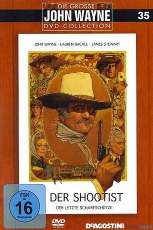
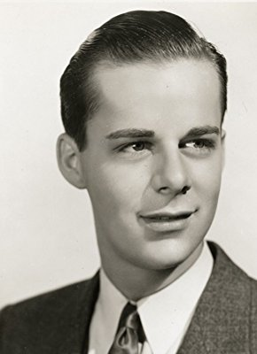

#3495 Der Scharfschütze
Alternativ: The Shootist
Auszeichnungen: für 1 Oscars nominiert
 
 IMDB-Wertung: 7.7 / 10
IMDB-Wertung: 7.7 / 10  Metascore: 0
Metascore: 0 
John Bernard Books (John Wane) ist der letzte Scharfschütze seiner Art. Als er von seinem Doktor erfährt, dass er an Krebs leidet, will er sich zur Ruhe setzen, hat aber die Rechnung nicht mit einer Bande Ganoven gemacht, die ihn zum Duell herausfordern. US-Western aus dem Jahr 1976. Neben Wayne sind Lauren Bacall, Ron Howard und James Stewart zu sehen.
Jahr: 1976
Dauer: 98 Minuten
FSK: 16
Land: USA Studio: Paramount PicturesTonspuren:
Untertitel:
Auflösung: 1080p (1920x1064) Größe: 6922 MB
Genre: Drama, Western
Regisseur: Don Siegel
Drehbuch: Yin Nam
Soundtrack:
Darsteller:
 John Wayne als J.B. Books
John Wayne als J.B. Books Lauren Bacall als Bond Rogers
Lauren Bacall als Bond Rogers Ron Howard als Gillom Rogers
Ron Howard als Gillom Rogers James Stewart als Dr. Hostetler
James Stewart als Dr. Hostetler Richard Boone als Sweeney
Richard Boone als Sweeney Hugh O'Brian als Pulford
Hugh O'Brian als Pulford Bill McKinney als Cobb
Bill McKinney als Cobb Harry Morgan als Marshall Thibido
Harry Morgan als Marshall Thibido John Carradine als Beckum
John Carradine als Beckum- Sheree North als Serepta
- Rick Lenz als Dobkins
 Scatman Crothers als Moses
Scatman Crothers als Moses- Melody Thomas Scott als Girl on Streetcar
 Kathleen O'Malley als School Teacher
Kathleen O'Malley als School Teacher Christopher George als Books' Victim in Flashback , archive footage, uncredited
Christopher George als Books' Victim in Flashback , archive footage, uncredited- Jonathan Goldsmith als Book's Victim , uncredited
- Ricky Nelson als Books' Fellow Lawman in Flashback , archive footage, uncredited
 Bob Steele als Books' Victim in Flashback , archive footage, uncredited
Bob Steele als Books' Victim in Flashback , archive footage, uncredited Gregg Palmer als Burly Man
Gregg Palmer als Burly Man- Alfred Dennis als Barber
-  Dick Winslow als Streetcar Driver
- Chuck Dawson als Extra , uncredited
 Duke Fishman als Barfly , uncredited
Duke Fishman als Barfly , uncredited Leo Gordon als Books' Victim in Flashback , archive footage, uncredited
Leo Gordon als Books' Victim in Flashback , archive footage, uncredited- Charles G. Martin als Murray the Bartender , uncredited
 James Nolan als Gambler , uncredited
James Nolan als Gambler , uncredited- Henry Slate als Pulford Confidant , uncredited
- Ralph Volkie als White-Haired Bartender , uncredited
Datei: X:\HD-Western-Collections\John Wayne\Scharfschütze, Der (1976, FSK16, 1920x1064).mkv seit 17.04.2016
Festplatte: HD Eastern+Western
 Es gibt insgesamt 34 Filme in der Gruppe 'HD-Western-Collections\John Wayne'
Es gibt insgesamt 34 Filme in der Gruppe 'HD-Western-Collections\John Wayne'